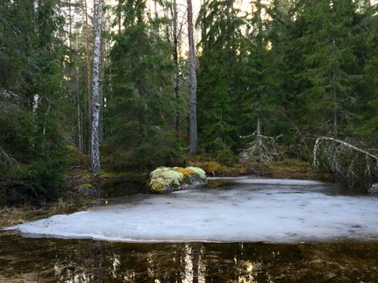
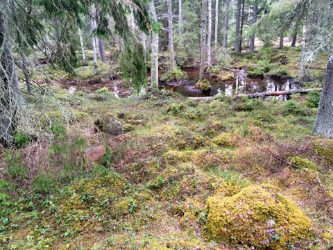
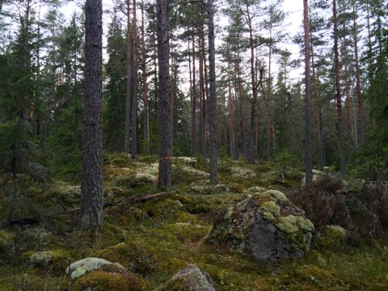
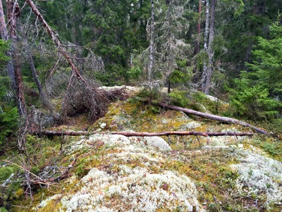
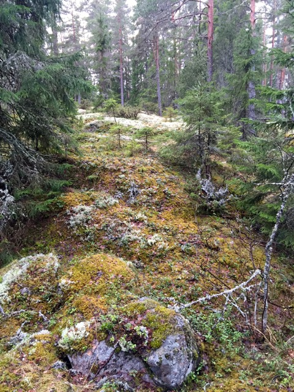
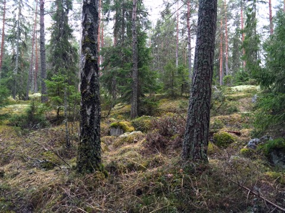
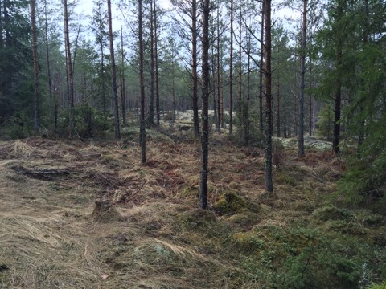
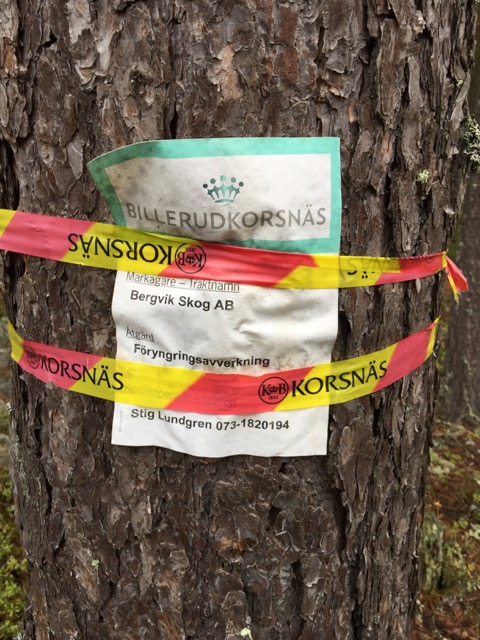
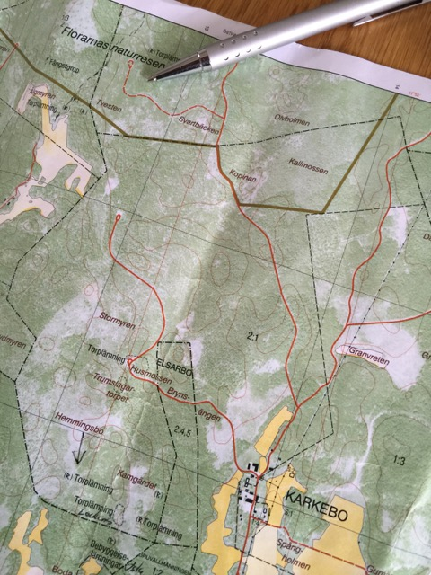

En dödsdömd skog blev en räddad skog - i naturreservatet Florarna - Tvestenskogen
För tre år sedan upptäckte jag till min glädje ett skogsområde i naturreservatets yttre zon. Där det fortfarande fanns något som kunde kallas riktig skog.

Denna skog är belägen på en höjdrygg med lite inflikade mossmarker. En del lågor och yngre självföryngrad gran etc på väg...men framförallt träd som i dagens mått kunde betraktas som lite äldre...relativt stora tallar och granar.

Våtmark i Tvestenskogen. Foto: Ronny Fredriksson
I den norra delen av höjdryggen övergår den till vackra hällmarker med täcken av lavar och mossor.
Men för tre år sedan sprang jag på en tjäderkull i denna skog...en härlig upplevelse. Sannolikt är livsbetingelserna för en tjäderkull ideala i denna skog. Blåbär och lingon och andra knoppar att leva av.

Lite mer öppen hällmarkstallskog. Notera Stora Billeruds märkning för avverkning. Foto: Ronny Fredriksson

Hällmark med lavar och mossor. Foto: Ronny Fredriksson

Foto: Ronny Fredriksson

Foto: Ronny Fredriksson
Den här skogen, Tvestensskogen är inte stor... ,i söder avgränsas den av en stickväg som går in västerut från vägen Karkebo- Stormon....söder om vägen är det ren produktionsskog....både i öster och väster (där den egentliga platsen Tvesten ligger) är det enbart produktionsskog.....skogen ägs av Stora Bergvik. I norr ansluter den till myrar och våtmarker i närhet till reservatets inre zon.

Produktionsskog intill. Enbart små välgallrade tallar. Foto: Ronny Fredriksson
Nu när jag kom till denna skog i helgen satt gul och röda märkningar överallt....denna skog ska avverkas. Trodde jag. Efter att ha skickat mejl till Länsstyrelsen och till Bergvik Skog.....visade det sig att även Länsstyrelsen bedömt skogen som viktig....den ingår i inre zonens utvidgning och är numer tillhörande naturvårdsverket.....en dödsdömd skog blev en RÄDDAD skog. Tack för det Länsstyrelsen och Naturvårdsverket.
Men köpet var i grevens tid.....för bara ett kort tag sedan...var det Bergviks skogs plan att avverka den....
I min reaktion...när jag trodde skogen skulle försvinna....skickade jag nedanstående......
När jag ser detta skulle jag vilja rikta följande frågeställningar till Stora Bergvik:
1. Ni är medvetna om att att det är skogsmark där man enligt reservatsföreskrifterna skall ta särskild hänsyn vid skogsbruket ?
2. Hur tar ni denna extra hänsyn rent praktiskt ? Om vi skulle ta en tur med Er på Er mark i reservatets yttre zon kan ni påvisa var ni tagit särskild hänsyn för naturvården ?
3. Ni känner till att ni enligt reservatsföreskrifterna skall undvika att göra för stora föryngringsytor ?
4. Hur begränsar ni föryngringsytorna i reservatet i förhållande till ytor som inte ligger i reservatet, storlek etc ? Kan ni visa på detta vid studiebesök på ett antal föryngringsytor i reservatets yttre zon ?
5. Samråder ni med reservatets förvaltare och tillsynsmyndighet i samband med avverkningar i naturreservatet?
6. Ni känner till att det bla råder dikningsförbud i reservatets yttre zon ?
Frågorna är idag 2015-04-06 mejlade till Bergvik skogs funktionsbrevlåda för synpunkter. Vi får se om Bergvik Skog svarar.
Till Länsstyrelsen skulle jag vilja rikta följande frågor:
1. Hur övervakar ni att särskild hänsyn tas vid skogsbruk i reservatets yttre zon, exempelvis att det lämnas bra zoner av träd vid myr- och mosskanter, att uddar och myrholmar inte avverkas ?
2. Om inte särskild hänsyn verkar tas, ingriper ni som myndighet ?
3. Hur övervakar ni att inte för stora föryngringsytor tas upp samt motverkar detta i förebyggande arbete gentemot skogsägarna ?
4. Hur samverkar ni med skogsägarna i den yttre zonen för förståelse av reservatets regler och intentioner ? Om skogsmark byter ägare gör ni en speciell informations insats i dessa lägen ?
5. Kan ni genom myndighetsbeslut bestraffa/anmäla de skogsägare som bryter mot reservatetsföreskrifter och har det skett ?
Frågorna är idag 2015-04-06 mejlade till Länsstyrelsens officiella mejladress och registrator. Vi får se om Länsstyrelsen svarar.
Länsstyrelsen svarade dagen efter....att skogen är skyddad...SÅ SKÖNT!

Korsnäs och Bergvik skog planerade att ta bort ytterligare en fin skog i yttre zonen av naturreservatet, men den räddades. Foto: Ronny Fredriksson
Läs mer om det dåliga skyddet i naturreservatets yttre zon på sidan om fakta
Tvestenskogens geografiska placering syns på bilden nedan. Vid pennspetsen.
